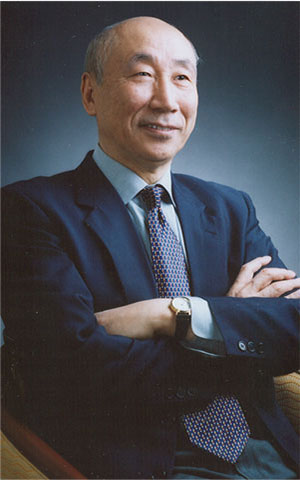
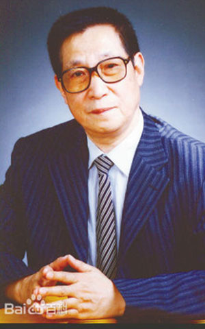
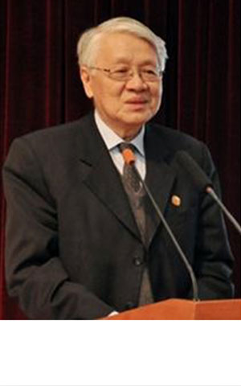

Toggle navigation
中国康复技术转化及发展促进协会
首页
关于协会
项目集锦
行业智库
协会动态
申请入会
中国康复技术转化及发展促进会
国家级医疗健康产业技术专业资源整合平台
2015/2016
协会介绍
政策解读
紧跟政策发展，解读最新风向
会议
闭门会，沙龙，学术会议，产业论坛
会员定制化升级服务
针对会员，提供个性化定制服务
制定及推进落实行业团体标准
企业服务
企业孵化、咨询、专项推进、医疗项目建设
技术成果转化
早期创新项目培育孵化，帮助实现临床试验、项目市场化可行性分析、市场推动
行业智囊
专业课题研究
产业园
全产业链整合、产业落地、因地制宜进行项目匹配（项目集锦）
人才培训
专业培训，管理培训，运营培训
合作专家

巴德年院士
中国工程院院士

巴德年院士
中国工程院院士

巴德年院士
中国工程院院士
巴德年院士
中国工程院院士
巴德年院士
中国工程院院士
巴德年院士
中国工程院院士
协会章程
点击更多
协会分支
精准医学与肿瘤康复专业委员会
于2016年，由中国康复技术转化及发展促进会联合程书钧院士、陈润生院士、詹启敏院士、程京院士等行业顶尖专家发起成立
查看更多
精准医学与肿瘤康复专业委员会
于2016年，由中国康复技术转化及发展促进会联合程书钧院士、陈润生院士、詹启敏院士、程京院士等行业顶尖专家发起成立
查看更多
精准医学与肿瘤康复专业委员会
于2016年，由中国康复技术转化及发展促进会联合程书钧院士、陈润生院士、詹启敏院士、程京院士等行业顶尖专家发起成立
查看更多
精准医学与肿瘤康复专业委员会
于2016年，由中国康复技术转化及发展促进会联合程书钧院士、陈润生院士、詹启敏院士、程京院士等行业顶尖专家发起成立
查看更多
精准医学与肿瘤康复专业委员会
于2016年，由中国康复技术转化及发展促进会联合程书钧院士、陈润生院士、詹启敏院士、程京院士等行业顶尖专家发起成立
查看更多
精准医学与肿瘤康复专业委员会
于2016年，由中国康复技术转化及发展促进会联合程书钧院士、陈润生院士、詹启敏院士、程京院士等行业顶尖专家发起成立
查看更多
精准医学与肿瘤康复专业委员会
于2016年，由中国康复技术转化及发展促进会联合程书钧院士、陈润生院士、詹启敏院士、程京院士等行业顶尖专家发起成立
查看更多
精准医学与肿瘤康复专业委员会
于2016年，由中国康复技术转化及发展促进会联合程书钧院士、陈润生院士、詹启敏院士、程京院士等行业顶尖专家发起成立
查看更多